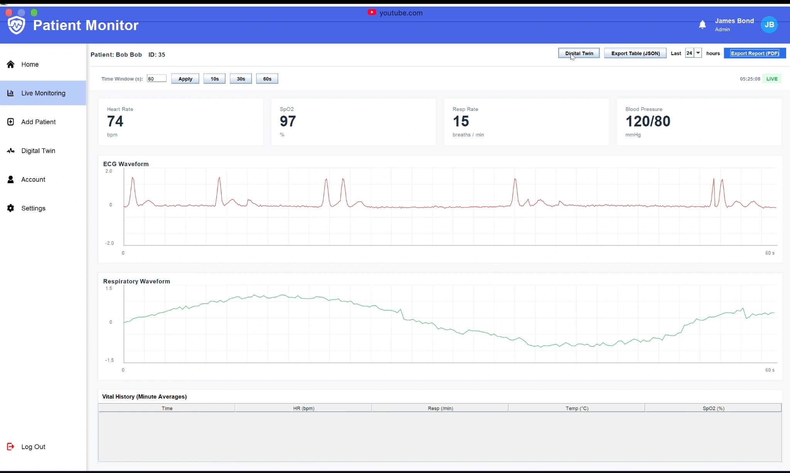
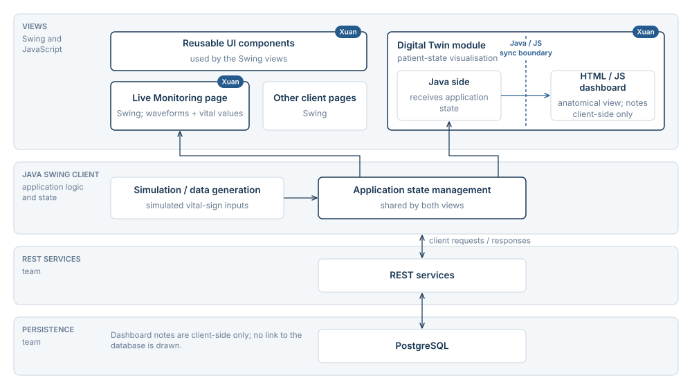
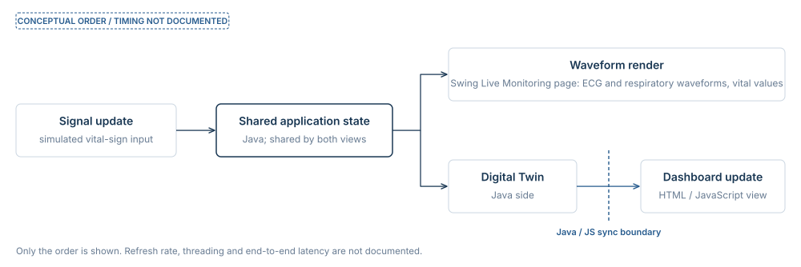
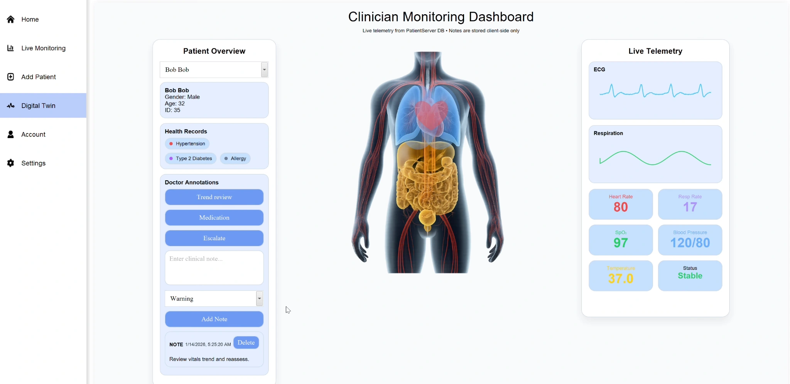

Patient monitoring & Digital Twin
Live waveform rendering and patient-state visualisation across Java and JavaScript.

The research question
How can a Java monitoring interface and an embedded JavaScript dashboard display a consistent patient state?
A desktop monitoring prototype that brings physiological signals and patient information into a clinician-facing interface.
Separate state, services and rendering

Monitoring interface
The monitoring interface separates signal generation, application state and Swing rendering.
Cross-language boundary
The embedded HTML/JavaScript dashboard receives state updates from the Java application to keep the two patient views consistent.
One state update, two views
The sequence traces a patient-state update from shared Java state to both interfaces.

What the work shows

One patient state, two presentations.
The monitoring page displays physiological waveforms, while the embedded dashboard presents the same patient state through an anatomical view and telemetry panels. The report describes the Java–JavaScript synchronisation boundary.
Watch application demonstrationLive updates required separate responsibilities
Early versions coupled signal simulation to the user interface. Refactoring separated data generation, state management and rendering, which clarified responsibilities during development.
The Java–JavaScript boundary
The Java application embeds an HTML/JavaScript dashboard and synchronises its patient data with the Swing monitoring page. The work centred on data flow and interface contracts so that both views could present a consistent state.
Project scope
What the completed system demonstrates
The team prototype connected a Java Swing client, REST services and PostgreSQL storage in a workflow covering patient onboarding, live ECG and respiration displays, alerts and record review. The demonstration shows those interfaces operating with simulated signals. The prototype was tested with simulated signals; hardware integration, clinical validation and latency benchmarking remain future work.